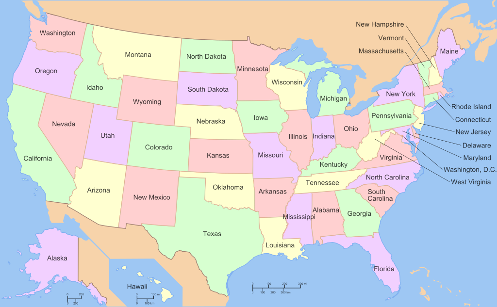

Welkom bij De Zieke Reisapp

Welkom en gefeliciteerd, jij hebt namelijk de beste en Ziekste Reisapp(tm) van Nederland gevonden, deze app specialiseerd zich in reizen naar Amerika en bevat werkelijk alles wat je nodig hebt om je reis naar de USA voor te bereiden, en zelfs tijdens je reis staan wij voor je klaar om je te voorzien van de ziekste tips, tricks en suggesties.
Hoe werkt het
Leuk zo'n app, maar hoe werkt het?
Om te beginnen helpen we je met het verkennen van Amerika, zoals je misschien al weet zijn er wel 50 staten. Om je op weg te helpen hebben kan je de staten sorteren en filteren, zo kan je bijvoorbeeld kijken welke staten lekker warm zijn.
Als je er eenmaal uit bent helpen we jou verder met de voorbereiding van je reis, bijvoorbeeld met het invullen van de ESTA en je op de hoogte te houden van alle regels rondom bagage.